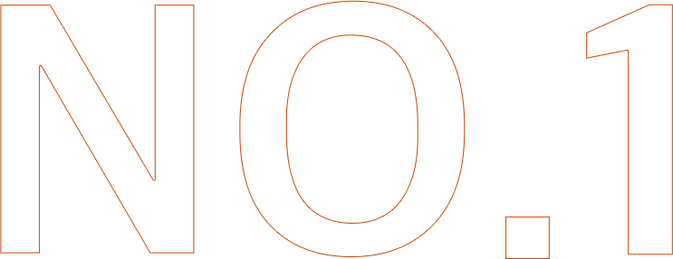
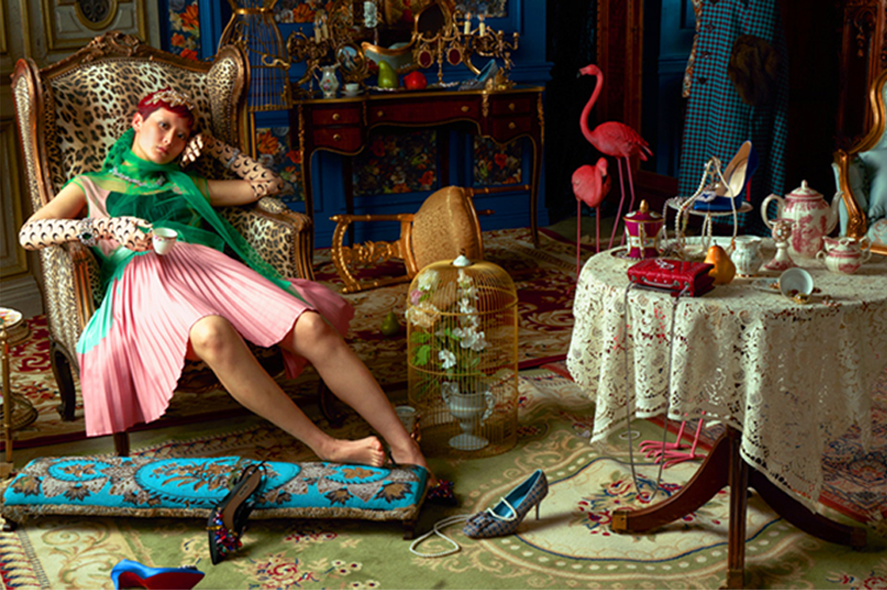
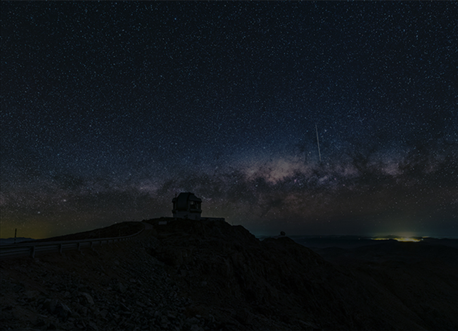
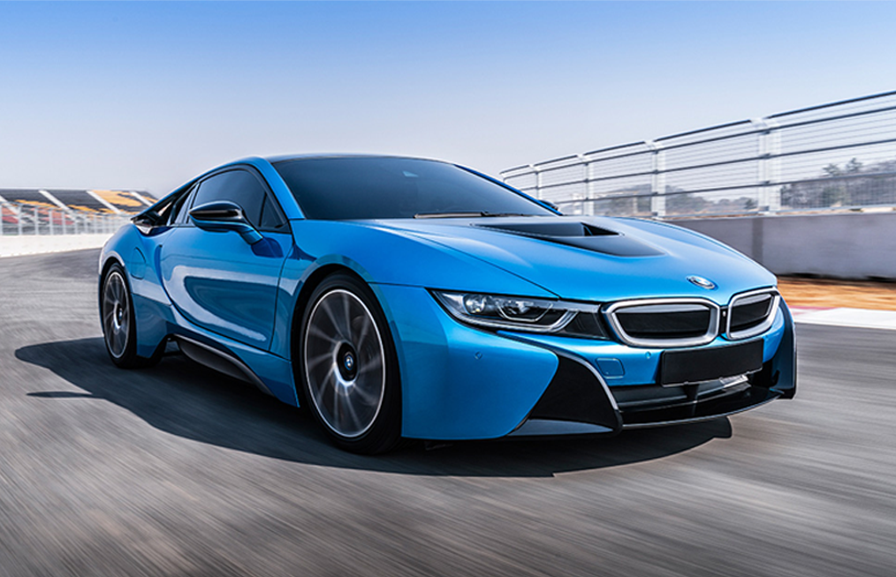

G Story
Lens line up
Gallery
Event
Login
미래형
렌즈의 완성
G MASTER

G MASTER
소니 G MASTER는 미래의 카메라에 대한 뚜렷한 비전과
기술의 혁신을 바탕으로 압도적인 해상력,
빠르고 정확한 AF 속도,아름다운 보케를
모두 갖춘 미래형 렌즈를 선보입니다.
렌즈의 한계를 뛰어넘는
초고해상력
최대 개방 극주변부조차
선명한 최신 설계 적용
빛의 예술을 만나는
환상적인 보케
XA렌즈로 녹아내릴듯
아름다운 보케 구현
탁월한 성능을 자랑하는
AF 모터
사진과 영상 모두 만족하는
조용하고도 빠른 새로운 모터 설계
G Master
렌즈 라인업
2mm 부터 600mm까지
다양한 화각의 G Master 렌즈를 소개합니다.
G Mater
New
Arrival
G Mater
단 렌즈
G Mater
줌 렌즈
소니 G Master 렌즈만의
압도적인 기술을 경험하세요
이미지화 및 예술 창작의 새로운 가능성이 열립니다. span
미래형 렌즈의 완성,소니 G Mater 렌즈!
하나의 렌즈로 고해상도와 놀라운 보케가 모두 가능하므로
이미지화 및 예술 창작의 새로운 가능성이 열립니다.
Future type the
completion of
a G-MASTER
and the overwhelming


